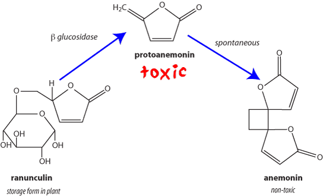

Protoanemonin is the main toxic principle of the Ranunculaceae. Ranunculaceae which have caused poisoning either in NZ or overseas include the buttercups, various species of Anemone, Clematis, hellebores, columbine and Pulsatilla. Poisoning is rare, considering the access stock have to Ranunculaceae (there are 52 spp of Ranunculus alone in NZ), and deaths are very rare.
Protoanamonin is present in the plant as ranunculin, a glycoside, and is released when the plant is damaged. The concentration of ranunculin varies enormously between different species, and within species. Unfortunately, ranunculin has not been assayed in all the NZ species of interest.
| species | ranunculin(g/kg) DM | protoanamonin (g/kg) wet | |
| R. repens | creeping buttercup | 3.8 | 0.125 - 0.276 |
| R. acris | giant buttercup | 27.5 - 28.7 | 1 - 5.7 |
| R bulbosus | bulbous buttercup | 7.7 - 10.9 | |
| R. ficaria | celandine | 198 - 199 | |
| C. palustris | marsh marigold | 0.00026 | |
| Cl. vitalba | old man’s beard | 0.15 - 3.1 | |
| Cl. montana | garden clematis | 0.42 - 0.93 | |
| H. niger | Christmas rose | 5.8 - 11.7 | |
| A. vulgaris | columbine | 0.00045 |
Protoanemonin is a pale yellow oil which is released on maceration by the enzyme β glucosidase. It rapidly polymerises to the inactive anemonin. This process also takes place on drying, so that hay including the plants is usually safe. Protoanemonin has been investigated as an antibacterial and antifungal but is too irritant for use. It is also cytotoxic.
Irritant. Some of the irritation may be caused by free radicals. The irritant nature of the plants means that they are unlikely to be eaten in quantity except by desparate or naive animals.
Early signs include salivation, mouth inflammation and abdominal pain. These may progess to mouth and gut ulceration leading to dark coloured diarrhoea. The urinary system may also be involved leading to blood satined urine. Rarely, animals may also become incoordinated, blind, convulse and die.
Lesions of mild to severe gastroenteritis are usually seen in animals that die from buttercup poisoning. The rumen usually contains massive amounts of buttercup and mouth and throat lesions may be seen also.
No specific treatment is available. Mild purgatives and demulcents may be give and potassium permanganate is said to be useful to protect the mouth and gut against the affects of protoanemonin.
Most mild cases recover spontaneously without treatment.
Connor, HE, The Poisonous plants in New Zealand, 2nd ed.,1977, Government Publications Ltd., Wellington
Schubiger, F. X.; Sachse, J. Feed value of Ranunculus repens and R. friesianus. Bewertung des Kriechenden und des Scharfen Hahnenfusses als Futterpflanzen. Landwirtschaft Schweiz 5 (11 12): 589 592 1992
Bai, Y.; Benn, M. H.; Majak, W.; McDiarmid, R. Extraction and HPLC determination of ranunculin in species of the buttercup family. Journal of Agricultural and Food Chemistry 44 (8): 2235 2238 1996